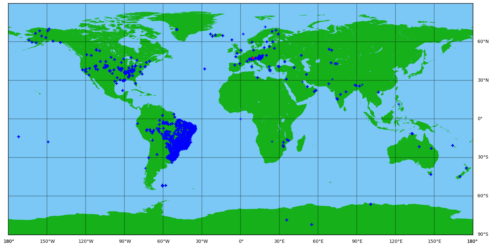
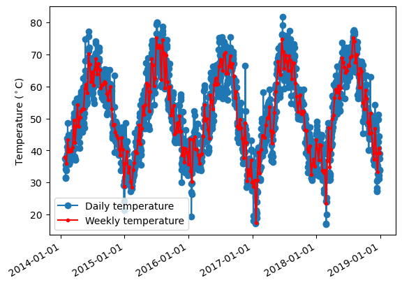
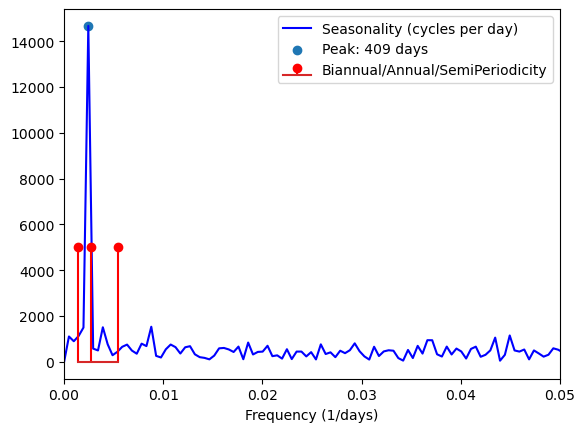

This notebook loads and visualizes data from the NOAA GSOD dataset into Pandas dataframe (2014 to 2018, access via BiqQuery API: https://cloud.google.com/bigquery/public-data/)
0.1 Include packages for plotting (matplotlib), data analysis (pands, scipy, statsmodel), and mapping (Basemap)
import numpy as npimport pandas as pdfrom pandas.tseries.offsets import DateOffsetimport matplotlib import matplotlib.pyplot as pltimport globfrom mpl_toolkits.basemap import Basemapimport matplotlib.pyplot as pltimport scipy.signal as sigimport timeimport datetime#signalprocessingfrom scipy.fftpack import fft, ifft, fftfreqimport matplotlib.pyplot as pltimport statsmodels.api as smaimport statsmodels.tsa.statespace.api as smfrom statsmodels.tsa.stattools import adfullerfrom numpy.random import randintimport matplotlib.dates as mdates#print(pd.__version__)
C:\Users\emmar\Anaconda3\envs\NOAA_BigQuery\lib\site-packages\pyproj\__init__.py:73: UserWarning: Valid PROJ data directory not found. Either set the path using the environmental variable PROJ_LIB or with `pyproj.datadir.set_data_dir`.
warnings.warn(str(err))
:::
1 Load the data
After storing the data locally, load 5 years from 2014-2018 into a dataframe.
dataset_path='../../../../../../Desktop/gittest/datasets/NOAA_SST/'fpath = dataset_path #+ 'noaa_gsod/'pandas_files =sorted(glob.glob(fpath +'noaa_gsod.gsod*'))pandas_files = pandas_files[-5:] # Take the last five yearsstations = pd.read_pickle(dataset_path+'noaa_gsod.stations') # load station datastations = stations[stations['begin'].astype(int)>20140101] # station data for the past 5 yearsdf =Nonefor i, fi inenumerate(pandas_files): dtmp = pd.read_pickle(fi)# read year from the filename and add as a column yr =int(fi[-4:]) dtmp['yr'] = yr*np.ones(len(dtmp),).astype(int)# create a datetime column, makes plotting timeseries easier dtmp['Datetime'] = pd.to_datetime((dtmp['yr'].astype(str) + dtmp['mo'].astype(str) + dtmp['da'].astype(str)),\format='%Y%m%d')# stick the years together df = pd.concat([df, dtmp], ignore_index=True)
:::
2 Merge environmental data with station data, then select a random station (red + on map).
df_all = df.merge(stations, left_on='stn',right_on='usaf')df_all = df_all[df_all['lon'].notna()]df_all = df_all.set_index('Datetime', drop=True)# # SELECT RANDOM STATION # #np.random.seed(33)rs = np.unique(df_all['stn'].values) # find unique stations with datarand_stat = rs[randint(len(rs))] # pick a random stationfeatures = df_all.loc[df_all['stn'] == rand_stat] # pick weather at random stationfeatures = features.drop(columns=['stn','max','min'], axis=1)features = features.sort_index()# View station locationsfig = plt.figure(figsize=(18.5, 10.5))m = Basemap(projection='cyl',llcrnrlat=-90,urcrnrlat=90,\ llcrnrlon=-180,urcrnrlon=180, resolution='l')# Make map look prettym.drawmapboundary(fill_color='xkcd:lightblue')m.fillcontinents(color='xkcd:green',lake_color='xkcd:lightblue')m.drawmeridians(np.arange(0.,350.,30.),labels=[True,False,False,True])m.drawparallels(np.arange(-90.,90,30.),labels=[False,True,True,False])# plot the stations with blue plusseslon = df_all['lon'].tolist()lat = df_all['lat'].tolist()xpt,ypt = m(lon,lat)m.plot(xpt,ypt,'b+') # Show the position of the stationprint('Station ID: ', rand_stat, '. Number of samples: ', len(df_all.loc[df_all['stn']==rand_stat]))lon = features['lon'].tolist()lat = features['lat'].tolist()m.plot(lon, lat,'r+') plt.show()
Station ID: 066900 . Number of samples: 1786

3 Plot the temperature timeseries from random station. Downsample from daily to weekly.
# look at the timeseries from the stationx = features['temp'].valuesxmean = np.mean(x)# Remove the mean for processingy = x - xmeanN =len(y)downsamp =7yt = sig.decimate(y, downsamp)tst = features.index[::downsamp]# Check if it's stationary! (it's not)#test = adfuller(y)#print(["It's stationary" if test[1]<0.05 else "It's not stationary"])fig=plt.figure()ax = fig.add_subplot(111)#ax.scatter(features.index, x)ax.plot(features.index, x, marker='o')ax.plot(tst, yt+xmean, zorder=3, marker='o',color='r',markersize=3)ax.xaxis.set_major_formatter(mdates.DateFormatter('%Y-%m-%d'))fig.autofmt_xdate()plt.legend(['Daily temperature','Weekly temperature'])plt.ylabel('Temperature ($^\circ$C)')plt.show()

4 Find the seasonality of temperature using an fft.
# get the frequency representation of the timeseriesNfft =int( 2**(np.ceil(np.log2(N))) )freq = fftfreq(Nfft)n_oneside = Nfft//2t_d =1/freq[:n_oneside] seasonality = np.abs(fft(y))# find peak frequencypkfreq, props = sig.find_peaks(seasonality[:n_oneside], prominence=5000)plt.figure()plt.plot(freq[:n_oneside], seasonality[:n_oneside], 'b')plt.stem([1/(365*2),2/365,1/365], 5000*np.ones((3,)), 'r')plt.scatter(freq[pkfreq[0]], seasonality[pkfreq[0]])plt.xlabel('Frequency (1/days)')plt.xlim([0,0.05])plt.legend(['Seasonality (cycles per day)','Peak: '+str(int(1/freq[pkfreq[0]])) +' days','Biannual/Annual/SemiPeriodicity'])plt.show()ts = features.index
C:\Users\emmar\AppData\Local\Temp\ipykernel_15588\285075550.py:5: RuntimeWarning: divide by zero encountered in divide
t_d = 1/freq[:n_oneside]

5 Train a SARIMAX model on weekly temperature before 2018. Predict 100 days past 2017.
# traindatatpred =100# predict 100 days into the futureNtrain =len(tst[tst<datetime.datetime.strptime('January 1, 2018','%B %d, %Y')])traindata = yt[0:Ntrain]testdata = yt[Ntrain:]ts_pred = [tst[-(len(yt)-Ntrain)] + DateOffset(days=i) for i inrange((tpred+len(yt)-Ntrain)*downsamp)]ts_pred = ts_pred[::downsamp]# use seasonal arima modelmod = sm.SARIMAX(traindata, order=(0, 0, 0), seasonal_order = (2,0,2,np.floor(1/freq[pkfreq[0]]/downsamp)))res = mod.fit()train = res.predict(1, Ntrain)prediction = res.forecast(tpred+ (len(yt)-Ntrain))plt.figure()plt.scatter(features.index, y)plt.plot(ts_pred, prediction,'r')plt.plot(tst[:Ntrain], train, 'r:')ax.xaxis.set_major_formatter(mdates.DateFormatter('%Y-%m-%d'))fig.autofmt_xdate()plt.ylabel('Temperature anomaly ($^\circ$C)')plt.legend(['Data','Prediction (unseen data)','Training Results'])plt.show()
C:\Users\emmar\Anaconda3\envs\NOAA_BigQuery\lib\site-packages\statsmodels\base\model.py:607: ConvergenceWarning: Maximum Likelihood optimization failed to converge. Check mle_retvals
warnings.warn("Maximum Likelihood optimization failed to "